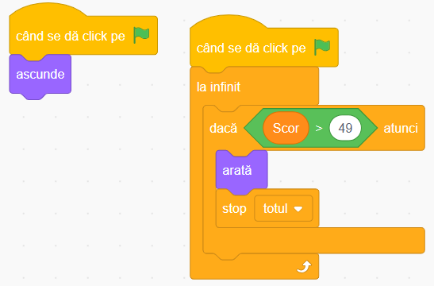
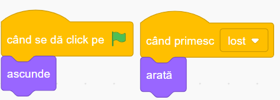

Jocul "Moto Racer" în Scratch
Povestea jocului
Imaginează-ți că ești un motociclist talentat care își testează abilitățile pe un drum plin de obstacole. În acest joc palpitant, vei controla o motocicletă care trebuie să evite pietrele periculoase de pe drum, în timp ce colectează stele strălucitoare pentru a-ți crește scorul.
Jocul "Moto Racer" combină reflexele rapide cu o strategie simplă și este perfect pentru cei care vor să învețe conceptele de bază ale programării în Scratch. Vei crea mișcări controlate cu tastatura, vei genera obstacole și recompense aleatorii, și vei adăuga condiții de victorie și înfrângere.
Ce vei învăța
- Controlul personajului cu săgețile stânga-dreapta
- Generarea de obstacole și recompense aleatorii
- Utilizarea clonelor pentru a crea multiple obiecte
- Detectarea coliziunilor între personaje
- Implementarea sistemului de scor și a condițiilor de final
Să începem!
Pentru a crea acest joc mai ușor, am pregătit un proiect starter cu personajele principale și decorul deja adăugate. Tot ce trebuie să faci este să adaugi codul pentru a le aduce la viață!
Deschide proiectul starterSfat: Apasă butonul "Vezi în interior" pentru a putea edita proiectul, apoi "Remixează" pentru a salva propria versiune!
1 Personajele jocului
Proiectul starter conține deja personajele principale. Mai trebuie să adăugăm doar pietrele și stelele din biblioteca Scratch:
Moto (Motocicleta)
Personajul principal pe care îl vei controla cu săgețile stânga-dreapta.
Star (Steaua)
Obiectul pe care trebuie să-l colectezi pentru a obține puncte.
Rocks (Pietrele)
Obstacolele pe care trebuie să le eviți pentru a nu pierde jocul.
Win (Victorie)
Mesajul care apare când jucătorul atinge scorul țintă.
Lost (Înfrângere)
Mesajul care apare când jucătorul lovește o piatră.
Adăugarea personajelor lipsă:
- Pentru a adăuga Stelele, apasă pe iconița "Alege un personaj" din colțul din dreapta jos
- Caută "star" în biblioteca Scratch și alege o stea care îți place
- Pentru Pietre, caută "rock" sau "stone" și alege o piatră potrivită
- Poți redimensiona personajele folosind instrumentul de redimensionare dacă sunt prea mari sau prea mici
Sfat
Motocicleta are 5 costume diferite pe care le poți schimba. Poți selecta un alt costum din tab-ul "Costume" pentru a personaliza jocul!
2 Animarea decorului pentru efect de mișcare
Pentru a crea iluzia că motocicleta se deplasează pe drum, vom anima decorul schimbând rapid între mai multe costume ușor decalate. Această tehnică creează un efect vizual de mișcare continuă.
Cum funcționează:
- La începerea jocului - selectăm primul costum al decorului.
- Bucla infinită - într-o buclă care rulează continuu:
- Schimbăm la următorul costum din cele 12 disponibile
- Așteptăm 0.2 secunde pentru a crea o animație fluidă
Decorul conține 12 costume aproape identice, cu mici diferențe între liniile de pe șosea. Când le schimbăm rapid, se creează iluzia că drumul se mișcă în jos, dând impresia că motocicleta înaintează.
Sfat
Poți ajusta viteza animației modificând timpul din blocul "așteaptă 0.2 secunde". O valoare mai mică înseamnă o animație mai rapidă, iar o valoare mai mare înseamnă o animație mai lentă.
3 Controlarea motocicletei
Primul pas este să facem motocicleta să se miște stânga-dreapta folosind săgețile de pe tastatură. Selectează personajul Moto și adaugă următorul cod:
Cum funcționează:
- La începerea jocului - motocicleta se poziționează în partea de jos a ecranului și se face vizibilă.
- Controlul mișcării - verificăm continuu dacă săgețile stânga sau dreapta sunt apăsate și mișcăm motocicleta cu 10 pași în direcția corespunzătoare.
Sfat
Poți ajusta viteza de deplasare modificând numărul din blocurile "modifică x cu 10" și "modifică x cu -10". Un număr mai mare înseamnă o mișcare mai rapidă.
4 Crearea pietrelor (obstacole)
Acum vom face pietrele să apară din partea de sus a ecranului și să coboare pe drum. Selectează personajul Rocks și adaugă următorul cod:
Cum funcționează:
- La începutul jocului - ascundem piatra originală, deoarece vom folosi clone pentru a genera multiple pietre.
- Generarea continuă - într-o buclă infinită, creăm clone ale pietrei la intervale de 1 secundă.
- Comportamentul clonelor - când o clonă este creată:
- Apare în partea de sus a ecranului la o poziție x aleatoare (pe una dintre benzi)
- Se face vizibilă și începe să coboare pe drum
- Verifică constant dacă atinge motocicleta (declanșând pierderea jocului) sau dacă ajunge în afara ecranului (caz în care dispare)
Sfat
Pentru a face jocul mai dificil, poți reduce timpul de așteptare între generarea pietrelor sau poți mări viteza de coborâre modificând valoarea din blocul "modifică y cu -5".
5 Crearea stelelor (puncte)
Similar cu pietrele, vom face ca stelele să apară și să coboare pe drum. Când motocicleta atinge o stea, jucătorul câștigă un punct. Selectează personajul Star și adaugă următorul cod:
Cum funcționează:
- La început - ascundem steaua originală și setăm scorul la 0.
- Generarea continuă - la fiecare secundă, creăm o clonă a stelei.
- Comportamentul clonelor - când o clonă este creată:
- Apare în partea de sus a ecranului la o poziție x aleatoare
- Se face vizibilă și începe să coboare pe drum
- Verifică constant dacă atinge motocicleta (adăugând un punct) sau dacă ajunge în afara ecranului
- Dispare după ce este colectată sau iese din ecran
Pentru pietre:
Pentru stele:
6 Condiții de victorie și înfrângere
În final, trebuie să adăugăm condiții pentru a ști când jucătorul câștigă sau pierde. Vom folosi personajele "Win" și "Lost" pentru a afișa mesajele corespunzătoare.
Pentru personajul "Win":
Când scorul depășește 49, jucătorul câștigă!
Pentru personajul "Lost":
Când jucătorul primește mesajul "lost", jocul se termină!
Cum funcționează:
Ambele personaje sunt ascunse la început. Ele apar doar când sunt îndeplinite condițiile specifice:
- Win - verifică constant dacă scorul a atins 50 de puncte și afișează un mesaj de felicitare când această condiție este îndeplinită.
- Lost - ascultă mesajul "lost" care este trimis când motocicleta atinge o piatră și afișează un mesaj de înfrângere.
Când apare oricare dintre aceste mesaje, jocul se oprește folosind blocul "stop [totul]".
Sfat
Poți modifica scorul necesar pentru victorie schimbând valoarea din blocul "dacă Scor > 49". De exemplu, pentru un joc mai lung, poți seta scorul necesar la 100.
7 Testează și îmbunătățește
Acum că toate elementele jocului sunt implementate, este timpul să îl testezi! Apasă steagul verde și încearcă să eviți pietrele în timp ce colectezi cât mai multe stele.
Provocări pentru îmbunătățirea jocului
După ce ai terminat jocul de bază, încearcă aceste îmbunătățiri:
Adaugă efecte sonore
Adaugă sunete pentru colectarea stelelor, lovirea pietrelor și câștigarea jocului.
Crește dificultatea treptat
Fă jocul să devină mai dificil pe măsură ce scorul crește, mărind viteza pietrelor sau frecvența lor.
Adaugă mai multe tipuri de obstacole
Creează obstacole noi, cum ar fi cactuși sau alte vehicule, fiecare cu comportamente diferite.
Adaugă un ecran de start
Creează un ecran de titlu cu instrucțiuni și un buton de start pentru joc.
Felicitări!
Ai creat un joc captivant de curse de motocicletă! Acest proiect ți-a permis să înveți despre detectarea coliziunilor, generarea de obiecte aleatorii și utilizarea clonelor în Scratch. Acum poți:
- Împărtășește jocul cu prietenii și familia
- Personalizează-l adăugând propriile tale idei și îmbunătățiri
- Folosește aceste concepte pentru a crea alte jocuri similare
6 Testează și îmbunătățește
Acum că toate elementele jocului sunt implementate, este timpul să îl testezi! Apasă steagul verde și încearcă să eviți pietrele în timp ce colectezi cât mai multe stele.
Provocări pentru îmbunătățirea jocului
După ce ai terminat jocul de bază, încearcă aceste îmbunătățiri:
Adaugă efecte sonore
Adaugă sunete pentru colectarea stelelor, lovirea pietrelor și câștigarea jocului.
Crește dificultatea treptat
Fă jocul să devină mai dificil pe măsură ce scorul crește, mărind viteza pietrelor sau frecvența lor.
Adaugă mai multe tipuri de obstacole
Creează obstacole noi, cum ar fi cactuși sau alte vehicule, fiecare cu comportamente diferite.
Adaugă un ecran de start
Creează un ecran de titlu cu instrucțiuni și un buton de start pentru joc.
Felicitări!
Ai creat un joc captivant de curse de motocicletă! Acest proiect ți-a permis să înveți despre detectarea coliziunilor, generarea de obiecte aleatorii și utilizarea clonelor în Scratch. Acum poți:
- Împărtășește jocul cu prietenii și familia
- Personalizează-l adăugând propriile tale idei și îmbunătățiri
- Folosește aceste concepte pentru a crea alte jocuri similare